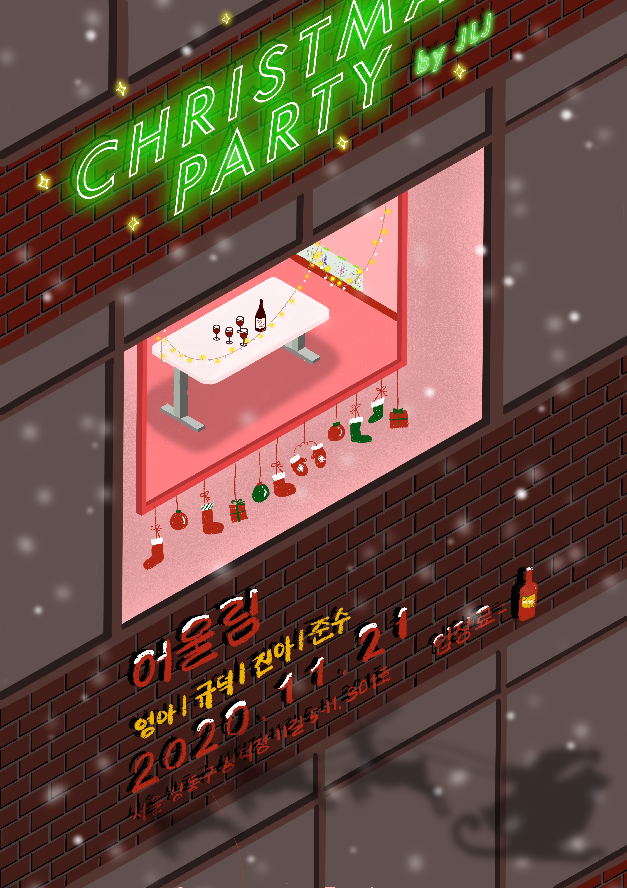

아래 질문에 답변을 생각해 오세요. 상대방에 대한 질문이 대다수 입니다.
Q1: 영아/규덕의 장점이라고 생각하는것(단, 반드시 사소해야 함)
ex)옷을 정말 정말 잘 개킨다, 아무음식이나 잘 먹는다 등.
Q2: 영아/규덕이 __할 때 제일 귀엽다.(뻔한거 X)
Q3: 영아/규덕이 __할 때 제일 얄밉다.
Q4: 영아/규덕은 __할 때 제일 진지하다.
ex) 맛집 고를 때, 신발끈 묶을때 등 일상 속 장면
Q5: 둘이 __할 때 제일 재미있다.
ex) 구체적인 상황 설명 필요
Q6: 우리의 올해 유행어, 말투
보너스: 겨울에 부르고 싶어지는 노래